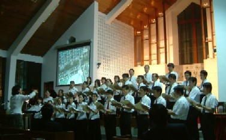

／田展艾•教會教音系專任老師及系主任

從歷世歷代以來，在教會所有的聚會中，音樂的使用向來佔非常重要的部分。
這一點可由許多例證中得知。譬如是全年例行的主日崇拜，週間的禱告會、小組聚會或各種團契，還有固定的節慶像是受難日、復活節、聖誕節等等；當然也包括了各種的特別聚會像是培靈佈道會、各種感恩聚會、婚禮、喪禮或追悼聚會等等。
由以上所列舉的各式各樣的聚會性質中，可以推想出，教會音樂事奉實際上應該是包羅萬象的，而且也應該涵蓋了不同層面的服事。像是教會中的各級詩班、敬拜團、器樂團、領會領詩，當然也包括了各種聚會中帶領會眾唱詩的服事。
進而，教會音樂事奉在教會整體的服事中更擁有戰略性的地位。從教會復興歷史中發現，幾乎每一次屬靈的大復興或復興運動，都與教會音樂發生密不可分的關聯。有些例子是在復興運動的催化下，產生了新風格的教會音樂，像是十八世紀的英國衛斯理復興運動。他們所創作的聖詩，後來被稱為是「福音詩歌」的鼻祖。
另外，也有某些例子是教會音樂帶動了屬靈大復興或復興運動，而慕迪和善奇的復興運動，就是此類中最好的例證。由以上的教會歷史實例中，可以看出教會音樂所佔有的重要地位，是絕對不可被輕忽的。
然而，為什麼教會音樂能產生這麼重要且深遠的影響力呢？這個問題的答案，可以從教會音樂在服事中所扮演的角色中得知。
就音樂表達方式而論，教會音樂事奉可以被劃分為兩大部份。其中之一是以歌唱的型態呈現出來，此類的音樂都包含了歌詞，所以能具體的傳遞出一個主題思想或是信息。這類的教會音樂事奉，因著混合了文字的表達，所以和教會事奉中其他與文字有關的事奉像是讀經、講道等統稱為「文字的事奉」（ service of words ）。
另外一大類的教會音樂事奉是指沒有歌詞的器樂曲。這類的音樂事奉雖然沒有文字的輔助，得以具體的闡述演奏者（也可稱為獻祭者）所要表達的信息，然而因不受歌詞的局限，此類的音樂事奉有時反而更能傳遞出更深更廣、且令人感動的信息。因此，在教會中的音樂事奉，無論被歸類於以上所提到的前者或後者，他們會因著不同的聚會型態，不同的聚會性質，以及不同的需求，而扮演不同的角色。
教會音樂事奉中文字事奉者之角色
（ Vocal—Service of Words ）
首先，單就與文字有關的教會音樂事奉之角色而論（本文只討論在教會中實際參與跟音樂有關之文字事奉者。其中應該包括在各種聚會中擔任領詩服事的同工，以及參與詩班服事的班員或是敬拜團的團員）。無論是領唱者、詩班或是敬拜團，他們所扮演的角色，是根據聚會性質和在其中音樂所需發揮的功能而定。
因此，為了配合不同的性質與功能，他們的角色應該包含了祭司（ Priest ）、先知（ Prophet ）、宣告者（ Proclaimer ）、治療師（ Healer ）、傳教師（ Preacher ）、教師（ Teacher ）。
1. 祭司
在聖經許多處的經文中記載著，音樂可以成為我們獻給神的祭品之一。正如希伯來書十三章十五節所記載的： 「我們應當靠著耶穌，常常以頌讚為祭獻給神，這就是那承認主名之人嘴唇的果子。」 另外，在詩篇六十九篇卅至卅一節也提到，神非常喜悅人以讚美歌為祭，更勝於以牛羊為祭獻給祂。此段經文是如此記載?： 「我要以詩歌讚美神的名，以感謝稱祂為大！這便叫耶和華喜悅，勝似獻牛、或是獻有角有蹄的公牛。」
舊約聖經中也提到一群有音樂恩賜的利未人（代上 15:16-24, 16:4-6, 23:5, 25:1-3, 代下 5:11-13 ），被給予猶如祭司般的職責，代表神的子民將他們的讚美、感恩與禱告好像祭物一般的獻給神，同時也將神的祝福帶給祂的百姓。因此，在教會崇拜中，領唱者、獨唱者、詩班或是敬拜團，時常扮演?祭司的角色，代表會眾或者是帶領會眾，將對神的讚美與感謝，以頌歌為祭獻給神。
此外，音樂事奉領袖們也擔負起教導會眾如何敬拜神的重責。根據列王紀下十七章廿四到卅三節的記載，當北國以色列被亞述國滅亡後，在亞述王的移民政策下，原先住在北國首府撒瑪利亞的以色列人，全部被遷移到外邦各地，同時遷入其他種族之居民住進撒瑪利亞，以取代原先的以色列民。當這些外地的居民，不按耶和華神的規矩行事時，神便叫獅子進入他們中間，咬死他們。因而，亞述王下令，吩咐一位被擄到外邦之事奉耶和華的祭司回到撒瑪利亞，為要教導當地的居民，應該如何的敬畏耶和華。
在這段經文第廿八節的 「怎樣敬畏耶和華」 ，和卅二節的 「懼怕耶和華」， 英文聖經則是譯為 “how to worship the Lord” ，以及 “worship the Lord” 。這裡給教會音樂事奉者的提醒是，當他們身負祭司獻祭之職責的同時，更要留意他們所示範的、所獻上的，是否按著神的規矩行，是否能教導人應該如何 「敬畏」 或 「懼怕」 神（ worship the Lord ）。
2. 先知
聖經中清楚的表明，先知的職責是代表神向祂的子民傳達祂的旨意，先知撒母耳所做的，就是一個最好的例證。在歷代志上也提到，音樂事奉者做先知說預言的服事，記載在廿五章第一和第五節： 「大衛和眾首領分派亞薩、希幔並耶杜頓的子孫彈琴、鼓瑟、敲鈸、唱歌（此處有小字記載︰唱歌原文作說預言）…希幔奉神之命作王的先見… 。 」
由此可知，在音樂的事奉中能帶出先知角色的果效來。但是，需要更小心的是，這先知預言的職責是「奉神之命」而得的，絕不是出於任何人為的方式造成的，或由人為方式製造出來的一個假象。所以，教會音樂事奉中先知角色的功能，是絕對不可以被誤用與濫用的。否則，事奉者不僅會得罪人，更是得罪神。
3. 宣告者
教會音樂事奉另外一個非常重要的角色，是做一個宣告者。他或他們首要的任務是將神的屬性，祂的奇妙大作為，以及祂的拯救，向世人大聲宣揚出來。
正如歷代志上十六章七到九節記載的： 「那日，衛初次藉亞薩和他的弟兄，以詩歌稱頌耶和華，說：你們要稱頌耶和華，求告祂的名，在萬民中傳揚祂的作為。要向祂唱詩、歌頌，論祂一切奇妙的作為 。 」 大衛王特別選派一群音樂專家，在創造宇宙萬物的真神面前，向神也向世人傳揚、歌頌、談論祂一切奇妙的作為。
教會音樂事奉者有責任藉著詩歌，不僅稱頌他們所相信的神，到底是怎樣的一位神，更以他們生命的經歷，表達見證出神的各種屬性來。譬如以賽亞書六章一到三節中，先知以賽亞描繪出他的個人屬靈經歷，以及他對神屬性的認知： 「…我見主坐在…其上有撒拉弗侍立…彼此呼喊說：『聖哉！聖哉！聖哉！萬軍之耶和華，祂的榮光充滿全地！』」
當音樂事奉者因經歷神的各種屬性（例：聖潔、公義、慈愛、信實、全知、全能、憐憫等等），並以一個感恩敬畏的心態，來讚美稱頌神的同時，能透過他們的詩歌，他們生命的經歷見證，向世人宣告所信之神之至聖至榮可頌可畏的屬性。
從舊約的摩西之歌（出埃及記十五章），以及底波拉之歌（士師記五章）中得以驗證，無論是摩西與當時被神從法老王手中拯救出來的以色列民，或是底波拉與巴拉，當他們親眼看見神的至奇至妙之大作為，同時也親身經歷了神的保護與拯救，立時一種無法自己的狂喜，透過歌頌及舞蹈的方式，向神表達他們發自內心深處的讚美與感恩。並且不經任何掩飾，也不加以修飾地將神的救恩，以及祂的奇妙作為，真實且真誠的向萬民萬邦宣揚並見證出來。
正如摩西所宣揚的： 「耶和華是我的力量…耶和華是戰士…法老的車輛、軍兵，耶和華已拋在海中…」 （出 15:2-4 ），以及底波拉所見證的： 「…耶和華降臨，為我攻擊勇士…」 （士 5:13 ）。因此，像這樣堅定地有能力地，引領神的子民思想並齊聲宣告神的拯救與作為，是教會音樂事奉者極為重要的職責之一。
4. 治療師
現今心理治療中，使用音樂來治療心理病患的案例，與日俱增。但是，如果有人認為，這種音樂心理治療法，是廿世紀中的新產物的話，那可就是大錯特錯了。因為，早在幾千年前的舊約時代，就已經有人知道，音樂有其特殊的效能，可以舒緩人內心的煩亂，醫治人心理上的疾病。
在聖經撒母耳記中（撒上 16:14-23 ），記載著這段人類歷史上，第一件有明文記錄，使用音樂來治療人心理的案例。其中清楚地提到： 「從神那�堥茠煽c魔臨到掃羅身上的時候，大衛就拿琴用手而彈，掃羅便舒暢爽快，惡魔離了他。」 （撒上 16:23 ）雖然，這段經文只提到大衛（扮演著治療師的角色），彈琴使掃羅得到舒暢，而不是使用有歌詞的音樂。但是，在教會事奉的實際例子中，也曾經歷到一些詩歌是特別能安慰人心的，特別能引領人專心仰望主，使人心得釋放的聖歌。
尤其是面對這個充斥?破碎心靈的社會，音樂事奉者實在有太多的機會，可以使用詩歌安慰並且醫治人心的創傷與苦痛。當人的靈得?醫治釋放以後，他的靈、魂、體便能依序恢復正常，而成為榮耀神的見證。
5. 傳教師
初代基督教會為了向當時的一般老百姓（均為沒有受教育的文盲）傳揚真理、教義，以及為了辨明與批判當時的各種異端，而透過音樂成為媒介宣傳其信仰。教會詩歌就在這種情況之下，成為非常有利的工具，用以傳遞基督教會所信仰的基本教義、神學觀。像是神的愛與救恩、人的罪與軟弱、基督的神性與人性、以及基督的工作等等。
正如傳統彌撒曲中的「信經」，就是為了辨別信仰教義之真偽，同時也表明信仰的神學立場。現今的教會音樂事奉，仍然承繼著早期的使命，擔負宣導基督信仰真理的職責，同時也扮演傳教師的角色。所以，教會音樂事奉者，在挑選崇拜所要使用的詩歌時，需要非常地留意歌詞�堜痁蘊z的真理，所傳遞的信息。因為，我們所唱的，就代表了我們所信的。就好像一位更正教的基督徒，並不適宜在他們教會正式的崇拜中，唱著歌頌聖母馬利亞的詩歌是一樣的道理。
6. 教師
在早期教會的音樂事奉中，音樂也被用來成為教育信徒認識明白神話語的一個管道。由於早期教會的信徒們多半是文盲，所以將經文配上簡易的旋律，可以便利他們記憶背誦神的話，以至於能反覆思想，進而明白並實踐神的話。
同時，在不同的世代之社會文化、歷史背景的影響與需求下，音樂還可以扮演教師的角色，適時地透過詩歌來教育當代信徒，如何活出合乎聖經真理之基督倫理來。正如，在美國的音樂事奉者和基督徒，於九一一恐怖事件後，便創作了一些以反恐怖、反暴力、追求和平與饒恕為主題的詩歌。在這種情況之下，闡揚基督倫理的詩歌就應醞而生了。
所以，教會音樂事奉者不僅有責任，透過音樂的服事，幫助人能夠使用更有效的方式，明白並且記住神的話，還要面對時代的需要，能夠敏銳而且有能力地回應之。
教會音樂事奉中器樂的使用及其角色
從教會歷史演變的過程中發現，每一個世代對於在崇拜中，是否應該使用樂器來敬拜神，以及在崇拜中有那一些樂器是被允許使用的，都抱持著些許或者是很不同的看法。這些不同的看法，大多數是起因於當時的人文與宗教文化對某些樂器之聖或俗有不同的見解而產生的。
正如，亡國後被擄到各地的以色列人，見到那些鄰邦異教徒在他們的崇拜中使用樂器。所以，當這群被擄的以色列人，可以歸回重建聖殿時，樂器便因為與異教崇拜有所關聯，而視為不潔。故此，在當時的以色列人崇拜中，樂器是被禁止使用的。這個傳統一直延續至耶穌的時代，甚至在早期教會的崇拜中，樂器也是被禁止使用的。
另外，從教會音樂史的實例中也發現，當崇拜中所使用的音樂或器樂曲，被發展到最完美與巔峰的時候，這些音樂常會過度地吸引人們的注意力，進而取代神（這位唯一應受敬拜的）在人心中的地位，成為人敬拜的對象。
這種趨勢會導致信徒是為了聽音樂才去教會，卻不是為了敬拜神。這也就是為什麼，在十六世紀中、末期，被教會發展至極為精美的管風琴音樂，竟然在受加爾文與慈運理改教之風影響的地區，遭到非常嚴厲的抵制。不僅如此，更有許多雄偉的管風琴，遭到激進份子的破壞與焚燬。
筆者希望透過以上兩個歷史實例，幫助提醒教會音樂事奉者，在選擇崇拜樂器時，更深入考慮這些樂器背後影射與代表的意義為何，及這些樂器可被發揮與使用的限度。以至於能使用適當的樂器，幫助信徒真實的敬拜神，而非引導信徒敬拜「音樂」或是敬拜一個令人興奮的「氣氛」。
就樂器在教會音樂事奉中所擔任的角色而論，在多數的情況下，樂器是以伴奏的姿態出現，只有在少數的需求下，成為獨挑大樑的主角。當樂器是以伴奏詩歌的身份出現出時，彈奏它（或它們）的人需要留意歌詞中的意思，並要以熟練的技巧與音樂修養，得以支持並且豐富歌詞所要傳達的信息。
千萬不能刻意展示技巧，使會眾無法專注於歌詞，以至於無法專心地敬拜神。當然也要避免因技藝不足，而使會眾的注意力在為伴奏者擔心，以至無法專心敬拜神。至於獨奏者，則更是需要成為一位謙卑的僕人，隱藏在主的�堶情]好像撒拉弗用兩個翅膀遮臉，兩個翅膀遮腳），盡其所能的將最美最好的音樂獻給神。而且，要使會眾因著這樣特別的服事，能心被恩感地單單思想神，全心的敬拜神。
當樂器以獨奏的方式在崇拜中出現時，在某些情形之下，它也可能扮演著先知或是治療師的角色。根據聖經列王紀下記載的一段史實（王下 3:9-15 ），當以色列王、猶大王、以東王要一起攻打摩押王時，因半途無水可喝，便請求先知以利沙為此事尋求耶和華神的旨意。雖然以利沙沒有立刻答應他們的請求，但是因著猶大王的緣故，先知以利沙最後還是答應他們，並且他要求三位國王說： 「現在你們給我找一個彈琴的來 。 」 而且，驚人的事是︰ 「彈琴的時候，耶和華的靈就降在以利沙的身上 。 」 （王下 3:15 ）這個舊約的例子，證實了在音樂事奉中，是能夠帶出像先知角色般的事奉，能察覺而且明白神的心意。
另外，在教會音樂事奉中，器樂曲也可以被使用在醫治人與釋放人的服事中。從大衛為掃羅王彈琴，以驅其心魔的記載中得證（撒上 16:14-18 ）。
雖然教會音樂事奉能帶出的先知預言與醫治的果效，但是，像這樣的服事在整個教會音樂事奉中，只佔了少數的比例。正如，按照整本聖經的記述史實比例而言，這些實例也只佔有極少的篇幅。並且，能從事這樣服事的人，是為眾人所知的 「神人」 與 「合神心意的人」 。所以，當一個服事愈是彰顯神奇妙的作為，並且是人看為不可能的，那麼，參與這樣音樂事奉的人，就愈是需要有生命的見證，以及神親自的驗證。
儘管從古至今，教會音樂事奉一直被賦予多重的角色，期盼有效地發揮出每一角色應有的職責與功能，為促使教會的復興和成長。然而，在廿一世紀的教會音樂事奉，同時在本世紀特有的地球村之文化交流、ｅ世代之資訊爆炸、以及基督教會世俗化的衝擊下，更需要在似是而非的教導中敏銳分辨，在小心謹慎中有所突破，更要在傳統保守中更新變化。正如，使徒保羅在羅馬書十二章二節中的勸勉︰ 「不要效法這個世界，只要心意更新而變化，叫你們察驗何為神的善良、純全、可喜悅的旨意。」
根據以上的經文，要讓教會音樂事奉，能有效地發揮其應有的角色與功能。首先，從事教會音樂事奉工作者需要反省，要求自己必須明白順服真理與聖靈的引導，能夠辨明真偽，不隨從世俗之風飄搖擺動，進而從世俗中分別為聖。並且按著神的心意，使教會音樂所有的角色，都被發揮的淋漓盡致，使人心回轉歸向神，願意敬虔地單一愛主、服事主，以至基督教會復興之火能再度點燃。